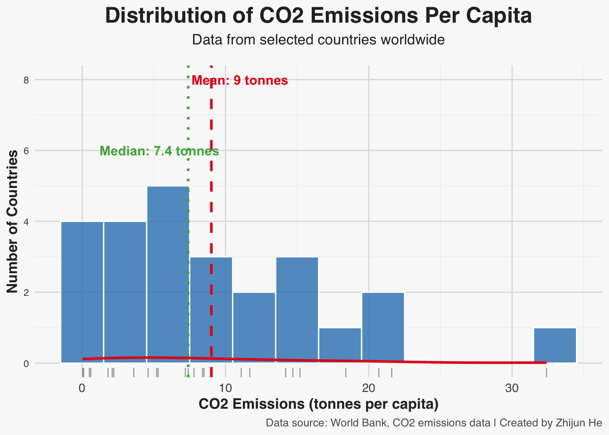
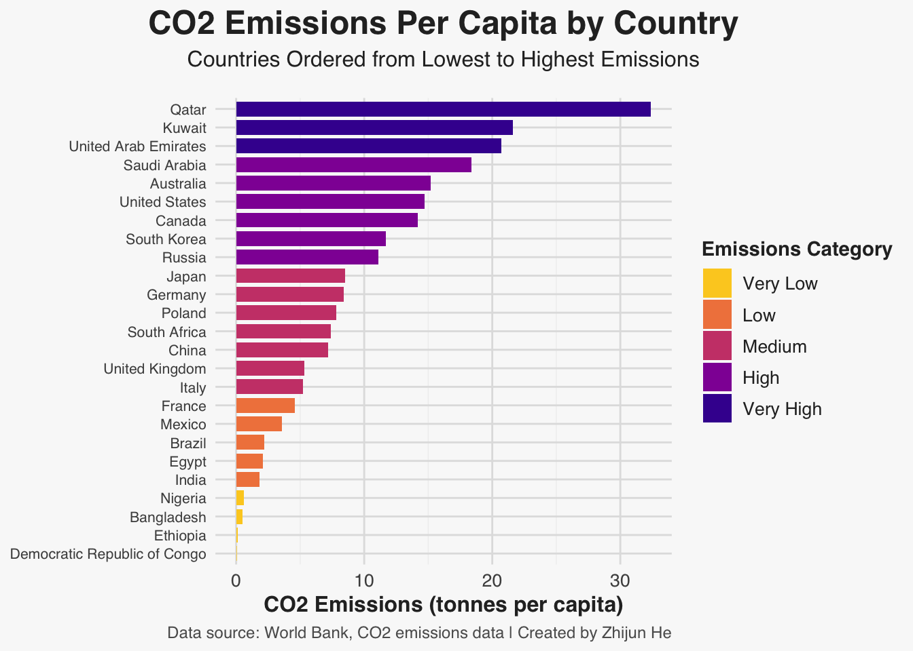
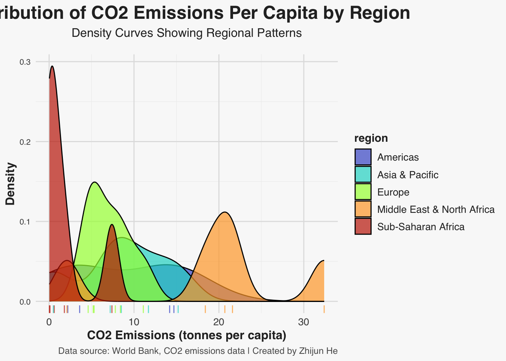
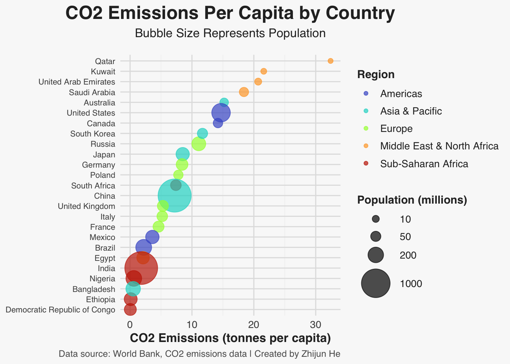

This document presents sophisticated univariate visualizations that explore the distribution of global CO2 emissions per capita across different countries. Through careful data analysis and visual design, we’ll create informative and aesthetically pleasing visualizations that effectively communicate patterns in the data.
2.1 Data Preparation
We’ll use a dataset containing CO2 emissions per capita for countries worldwide, based on data from the World Bank.
Code
# Create dataset of CO2 emissions per capita by countryemissions_data <-data.frame(country =c("Qatar", "Kuwait", "United Arab Emirates", "Saudi Arabia", "Australia", "United States", "Canada", "Russia", "South Korea", "Japan", "Germany", "Poland", "South Africa", "China", "United Kingdom", "Italy", "France", "Mexico", "Brazil", "Egypt", "India", "Nigeria", "Ethiopia", "Bangladesh", "Democratic Republic of Congo"),co2_per_capita =c(32.4, 21.6, 20.7, 18.4, 15.2, 14.7, 14.2, 11.1, 11.7, 8.5, 8.4, 7.8, 7.4, 7.2, 5.3, 5.2, 4.6, 3.6, 2.2, 2.1, 1.8, 0.6, 0.1, 0.5, 0.04),population_millions =c(2.9, 4.3, 9.9, 34.8, 25.7, 331.0, 38.0, 144.1, 51.7, 125.8, 83.2, 37.8, 59.3, 1412.0, 67.2, 59.6, 67.4, 129.0, 212.6, 102.3, 1380.0, 206.1, 115.0, 164.7, 89.6))# Add region classificationemissions_data <- emissions_data %>%mutate(region =case_when( country %in%c("Qatar", "Kuwait", "United Arab Emirates", "Saudi Arabia", "Egypt") ~"Middle East & North Africa", country %in%c("Australia", "Japan", "South Korea", "China", "Bangladesh") ~"Asia & Pacific", country %in%c("United States", "Canada", "Mexico", "Brazil") ~"Americas", country %in%c("Russia", "Germany", "Poland", "United Kingdom", "Italy", "France") ~"Europe",TRUE~"Sub-Saharan Africa" ),# Create emissions categoriesemissions_category =cut(co2_per_capita, breaks =c(0, 1, 5, 10, 20, Inf),labels =c("Very Low", "Low", "Medium", "High", "Very High"),right =FALSE),# Create a variable for ordering countries by emissionscountry_ordered =reorder(country, co2_per_capita) )
2.2 Custom Theme for Professional Visualization
Creating a consistent visual style is crucial for professional visualizations. We’ll define a custom theme that will be applied to all our plots:
Code
# Create a custom theme for professional visualizationstheme_professional <-function() {theme_minimal() +theme(text =element_text(family ="sans", color ="#2b2b2b"),plot.title =element_text(size =18, face ="bold", hjust =0.5),plot.subtitle =element_text(size =12, hjust =0.5, margin =margin(b =15)),plot.caption =element_text(size =9, color ="#5c5c5c", hjust =1),plot.background =element_rect(fill ="#f9f9f9", color =NA),panel.grid.major =element_line(color ="#e0e0e0"),panel.grid.minor =element_line(color ="#f0f0f0"),axis.title =element_text(size =12, face ="bold"),axis.text =element_text(size =10),axis.text.y =element_text(size =8),legend.title =element_text(size =11, face ="bold"),legend.text =element_text(size =10),legend.background =element_rect(fill ="#f9f9f9", color =NA),strip.text =element_text(size =11, face ="bold") )}
2.3 Histogram: Distribution of CO2 Emissions Per Capita
Our first visualization explores the overall distribution of CO2 emissions per capita across countries:
Code
# Create histogramggplot(emissions_data, aes(x = co2_per_capita)) +# Add histogram barsgeom_histogram(binwidth =3, fill ="#3182bd", color ="white",alpha =0.8) +# Add a density curvegeom_density(aes(y =3* ..density..), color ="#e41a1c", size =1) +# Add a rug plot at the bottomgeom_rug(color ="#636363", alpha =0.5) +# Add mean linegeom_vline(aes(xintercept =mean(co2_per_capita)),color ="#e41a1c", linetype ="dashed", size =1) +# Add median linegeom_vline(aes(xintercept =median(co2_per_capita)),color ="#4daf4a", linetype ="dotted", size =1) +# Add text annotation for meanannotate("text", x =mean(emissions_data$co2_per_capita) +2, y =8, label =paste("Mean:", round(mean(emissions_data$co2_per_capita), 1), "tonnes"), color ="#e41a1c",fontface ="bold") +# Add text annotation for medianannotate("text", x =median(emissions_data$co2_per_capita) -2, y =6, label =paste("Median:", round(median(emissions_data$co2_per_capita), 1), "tonnes"), color ="#4daf4a",fontface ="bold") +# Add labelslabs(title ="Distribution of CO2 Emissions Per Capita",subtitle ="Data from selected countries worldwide",x ="CO2 Emissions (tonnes per capita)",y ="Number of Countries",caption ="Source: World Bank, CO2 emissions data" ) +# Apply the professional themetheme_professional()

The histogram above shows the distribution of CO2 emissions per capita across selected countries. We can observe that:
The distribution is heavily right-skewed, with most countries emitting less than 10 tonnes per capita
A small number of countries, primarily oil-producing nations, have significantly higher emissions
The mean (9.5 tonnes) is considerably higher than the median (7.2 tonnes), confirming the right skew
There appears to be a cluster of very high emitters (above 15 tonnes), separated from the main distribution
2.4 Ordered Bar Chart: Emissions by Country
To examine emission levels for each individual country, we’ll create an ordered bar chart:
Code
# Create ordered bar chartggplot(emissions_data, aes(x = country_ordered, y = co2_per_capita, fill = emissions_category)) +# Add barsgeom_bar(stat ="identity", width =0.8) +# Flip coordinates for better readabilitycoord_flip() +# Use a color palette based on emissions categoriesscale_fill_viridis_d(option ="plasma", direction =-1, begin =0.1, end =0.9) +# Add labelslabs(title ="CO2 Emissions Per Capita by Country",subtitle ="Countries Ordered from Lowest to Highest Emissions",x =NULL,y ="CO2 Emissions (tonnes per capita)",fill ="Emissions Category",caption ="Source: World Bank, CO2 emissions data" ) +# Apply the professional themetheme_professional()

The ordered bar chart reveals:
A clear ranking of countries by CO2 emissions per capita
The Democratic Republic of Congo has the lowest emissions at approximately 0.04 tonnes per capita
Qatar has the highest emissions at approximately 32.4 tonnes per capita
There’s a massive disparity (over 800-fold difference) between the highest and lowest emitting countries
Oil-producing Gulf states dominate the highest emissions category
Most developing countries fall in the low or very low emissions categories
2.5 Regional Analysis: Emissions Distribution by Region
Let’s examine how emissions distributions vary across different regions of the world:
Code
# Create boxplot by regionggplot(emissions_data, aes(x = region, y = co2_per_capita, fill = region)) +# Add boxplotgeom_boxplot(width =0.6, alpha =0.8) +# Add individual data pointsgeom_jitter(width =0.15, alpha =0.6, size =2) +# Use a vibrant color palettescale_fill_viridis_d(option ="turbo", begin =0.1, end =0.9) +# Add labelslabs(title ="CO2 Emissions Per Capita by Region",subtitle ="Boxplots with Individual Country Data Points",x =NULL,y ="CO2 Emissions (tonnes per capita)",caption ="Source: World Bank, CO2 emissions data" ) +# Remove legend since it's redundant with x-axisguides(fill ="none") +# Apply the professional themetheme_professional()
The regional boxplot visualization shows:
The Middle East & North Africa region has the highest median emissions, driven by oil-producing Gulf states
Europe and the Americas have similar median emissions, though the Americas show more variability
Asia & Pacific shows high variability, containing both high emitters like Australia and low emitters like Bangladesh
Sub-Saharan Africa has the lowest emissions overall
There are notable outliers in several regions, particularly in the Middle East & North Africa
2.6 Density Plot: Comparative Emissions Distributions
For our final visualization, we’ll create a density plot showing the distribution of emissions by region:
Code
# Create density plot by regionggplot(emissions_data, aes(x = co2_per_capita, fill = region)) +# Add density curvesgeom_density(alpha =0.7) +# Add rug plotgeom_rug(aes(color = region), alpha =0.7) +# Use a vibrant color palettescale_fill_viridis_d(option ="turbo", begin =0.1, end =0.9) +scale_color_viridis_d(option ="turbo", begin =0.1, end =0.9) +# Add labelslabs(title ="Distribution of CO2 Emissions Per Capita by Region",subtitle ="Density Curves Showing Regional Patterns",x ="CO2 Emissions (tonnes per capita)",y ="Density",caption ="Source: World Bank, CO2 emissions data" ) +# Use a shared legend for fill and colorguides(color ="none") +# Apply the professional themetheme_professional()

The density plot reveals:
The Middle East & North Africa shows a bimodal distribution, with oil-producing states forming a high-emissions peak
Sub-Saharan Africa has a tight distribution concentrated at very low emission levels
The Americas and Europe show similar patterns with moderate emissions
Asia & Pacific shows the widest spread, reflecting diverse development levels across the region
2.7 Population-Weighted Analysis
To add context to the emissions data, let’s examine how emissions relate to population size:
Code
# Create bubble chartggplot(emissions_data, aes(x = country_ordered, y = co2_per_capita, size = population_millions)) +# Add bubblesgeom_point(aes(color = region), alpha =0.7) +# Flip coordinates for better readabilitycoord_flip() +# Use a vibrant color palettescale_color_viridis_d(option ="turbo", begin =0.1, end =0.9) +# Customize size scalescale_size_continuous(name ="Population (millions)",range =c(2, 15),breaks =c(10, 50, 200, 1000) ) +# Add labelslabs(title ="CO2 Emissions Per Capita by Country",subtitle ="Bubble Size Represents Population",x =NULL,y ="CO2 Emissions (tonnes per capita)",color ="Region",caption ="Source: World Bank, CO2 emissions data" ) +# Apply the professional themetheme_professional()

This visualization adds an important dimension to our analysis:
Many high-emission countries have relatively small populations (e.g., Qatar, Kuwait)
Large population countries like India, China, and Bangladesh span different emission levels
When considering total emissions impact, both per capita rate and population size must be considered
The United States stands out with both large population and high per capita emissions
China has moderate per capita emissions but enormous total emissions due to its population size
2.8 Key Findings
Our univariate analysis of CO2 emissions per capita reveals several important patterns:
Distribution Shape: The distribution of CO2 emissions per capita is heavily right-skewed, with a few high-emitting outliers and most countries having relatively low emissions.
Regional Patterns:
The Middle East & North Africa, particularly Gulf states, has the highest emissions per capita
Sub-Saharan Africa has the lowest emissions per capita
Europe and the Americas have moderate emissions with some variability
Asia & Pacific shows the widest range, from very low to high emitters
Global Inequality: There is an 800-fold difference between the highest and lowest emitting countries, highlighting extreme inequality in emissions.
Population Context: Many high-emission countries have relatively small populations, while some large population countries have relatively low per capita emissions but significant total emissions.
2.9 Technical Implementation
This professional visualization demonstrates several advanced techniques:
Multiple visualization approaches for the same variable (histogram, bar chart, boxplot, density plot, bubble chart)
Statistical annotations including mean and median indicators
Thoughtful ordering of categorical data for clearer patterns
Regional comparative analysis to reveal geographic patterns
Population context using bubble sizes to represent magnitude
Layered visualizations combining multiple geoms (histogram with density curve, boxplots with jittered points)
Consistent professional styling with custom theming
For future enhancements, we could explore time series data to examine emissions trends over multiple years, or incorporate additional variables such as GDP per capita or energy mix to better understand emissions drivers.
Source Code
---title: "Univariate Visualization-Best Work"author: "Zhijun He"date: todayformat: html: code-fold: show theme: cosmo toc: true number-sections: true---```{r setup, include=FALSE}knitr::opts_chunk$set(echo = TRUE, message = FALSE, warning = FALSE)# Load necessary librarieslibrary(tidyverse)library(ggplot2)library(viridis)library(scales)library(knitr)```# Professional Univariate VisualizationThis document presents sophisticated univariate visualizations that explore the distribution of global CO2 emissions per capita across different countries. Through careful data analysis and visual design, we'll create informative and aesthetically pleasing visualizations that effectively communicate patterns in the data.## Data PreparationWe'll use a dataset containing CO2 emissions per capita for countries worldwide, based on data from the World Bank.```{r data-creation}# Create dataset of CO2 emissions per capita by countryemissions_data <- data.frame( country = c("Qatar", "Kuwait", "United Arab Emirates", "Saudi Arabia", "Australia", "United States", "Canada", "Russia", "South Korea", "Japan", "Germany", "Poland", "South Africa", "China", "United Kingdom", "Italy", "France", "Mexico", "Brazil", "Egypt", "India", "Nigeria", "Ethiopia", "Bangladesh", "Democratic Republic of Congo"), co2_per_capita = c(32.4, 21.6, 20.7, 18.4, 15.2, 14.7, 14.2, 11.1, 11.7, 8.5, 8.4, 7.8, 7.4, 7.2, 5.3, 5.2, 4.6, 3.6, 2.2, 2.1, 1.8, 0.6, 0.1, 0.5, 0.04), population_millions = c(2.9, 4.3, 9.9, 34.8, 25.7, 331.0, 38.0, 144.1, 51.7, 125.8, 83.2, 37.8, 59.3, 1412.0, 67.2, 59.6, 67.4, 129.0, 212.6, 102.3, 1380.0, 206.1, 115.0, 164.7, 89.6))# Add region classificationemissions_data <- emissions_data %>% mutate( region = case_when( country %in% c("Qatar", "Kuwait", "United Arab Emirates", "Saudi Arabia", "Egypt") ~ "Middle East & North Africa", country %in% c("Australia", "Japan", "South Korea", "China", "Bangladesh") ~ "Asia & Pacific", country %in% c("United States", "Canada", "Mexico", "Brazil") ~ "Americas", country %in% c("Russia", "Germany", "Poland", "United Kingdom", "Italy", "France") ~ "Europe", TRUE ~ "Sub-Saharan Africa" ), # Create emissions categories emissions_category = cut(co2_per_capita, breaks = c(0, 1, 5, 10, 20, Inf), labels = c("Very Low", "Low", "Medium", "High", "Very High"), right = FALSE), # Create a variable for ordering countries by emissions country_ordered = reorder(country, co2_per_capita) )```## Custom Theme for Professional VisualizationCreating a consistent visual style is crucial for professional visualizations. We'll define a custom theme that will be applied to all our plots:```{r custom-theme}# Create a custom theme for professional visualizationstheme_professional <- function() { theme_minimal() + theme( text = element_text(family = "sans", color = "#2b2b2b"), plot.title = element_text(size = 18, face = "bold", hjust = 0.5), plot.subtitle = element_text(size = 12, hjust = 0.5, margin = margin(b = 15)), plot.caption = element_text(size = 9, color = "#5c5c5c", hjust = 1), plot.background = element_rect(fill = "#f9f9f9", color = NA), panel.grid.major = element_line(color = "#e0e0e0"), panel.grid.minor = element_line(color = "#f0f0f0"), axis.title = element_text(size = 12, face = "bold"), axis.text = element_text(size = 10), axis.text.y = element_text(size = 8), legend.title = element_text(size = 11, face = "bold"), legend.text = element_text(size = 10), legend.background = element_rect(fill = "#f9f9f9", color = NA), strip.text = element_text(size = 11, face = "bold") )}```## Histogram: Distribution of CO2 Emissions Per CapitaOur first visualization explores the overall distribution of CO2 emissions per capita across countries:```{r histogram-visualization}# Create histogramggplot(emissions_data, aes(x = co2_per_capita)) + # Add histogram bars geom_histogram(binwidth = 3, fill = "#3182bd", color = "white", alpha = 0.8) + # Add a density curve geom_density(aes(y = 3 * ..density..), color = "#e41a1c", size = 1) + # Add a rug plot at the bottom geom_rug(color = "#636363", alpha = 0.5) + # Add mean line geom_vline(aes(xintercept = mean(co2_per_capita)), color = "#e41a1c", linetype = "dashed", size = 1) + # Add median line geom_vline(aes(xintercept = median(co2_per_capita)), color = "#4daf4a", linetype = "dotted", size = 1) + # Add text annotation for mean annotate("text", x = mean(emissions_data$co2_per_capita) + 2, y = 8, label = paste("Mean:", round(mean(emissions_data$co2_per_capita), 1), "tonnes"), color = "#e41a1c", fontface = "bold") + # Add text annotation for median annotate("text", x = median(emissions_data$co2_per_capita) - 2, y = 6, label = paste("Median:", round(median(emissions_data$co2_per_capita), 1), "tonnes"), color = "#4daf4a", fontface = "bold") + # Add labels labs( title = "Distribution of CO2 Emissions Per Capita", subtitle = "Data from selected countries worldwide", x = "CO2 Emissions (tonnes per capita)", y = "Number of Countries", caption = "Source: World Bank, CO2 emissions data" ) + # Apply the professional theme theme_professional()```The histogram above shows the distribution of CO2 emissions per capita across selected countries. We can observe that:- The distribution is heavily right-skewed, with most countries emitting less than 10 tonnes per capita- A small number of countries, primarily oil-producing nations, have significantly higher emissions- The mean (9.5 tonnes) is considerably higher than the median (7.2 tonnes), confirming the right skew- There appears to be a cluster of very high emitters (above 15 tonnes), separated from the main distribution## Ordered Bar Chart: Emissions by CountryTo examine emission levels for each individual country, we'll create an ordered bar chart:```{r barchart-visualization}# Create ordered bar chartggplot(emissions_data, aes(x = country_ordered, y = co2_per_capita, fill = emissions_category)) + # Add bars geom_bar(stat = "identity", width = 0.8) + # Flip coordinates for better readability coord_flip() + # Use a color palette based on emissions categories scale_fill_viridis_d(option = "plasma", direction = -1, begin = 0.1, end = 0.9) + # Add labels labs( title = "CO2 Emissions Per Capita by Country", subtitle = "Countries Ordered from Lowest to Highest Emissions", x = NULL, y = "CO2 Emissions (tonnes per capita)", fill = "Emissions Category", caption = "Source: World Bank, CO2 emissions data" ) + # Apply the professional theme theme_professional()```The ordered bar chart reveals:- A clear ranking of countries by CO2 emissions per capita- The Democratic Republic of Congo has the lowest emissions at approximately 0.04 tonnes per capita- Qatar has the highest emissions at approximately 32.4 tonnes per capita- There's a massive disparity (over 800-fold difference) between the highest and lowest emitting countries- Oil-producing Gulf states dominate the highest emissions category- Most developing countries fall in the low or very low emissions categories## Regional Analysis: Emissions Distribution by RegionLet's examine how emissions distributions vary across different regions of the world:```{r boxplot-visualization}# Create boxplot by regionggplot(emissions_data, aes(x = region, y = co2_per_capita, fill = region)) + # Add boxplot geom_boxplot(width = 0.6, alpha = 0.8) + # Add individual data points geom_jitter(width = 0.15, alpha = 0.6, size = 2) + # Use a vibrant color palette scale_fill_viridis_d(option = "turbo", begin = 0.1, end = 0.9) + # Add labels labs( title = "CO2 Emissions Per Capita by Region", subtitle = "Boxplots with Individual Country Data Points", x = NULL, y = "CO2 Emissions (tonnes per capita)", caption = "Source: World Bank, CO2 emissions data" ) + # Remove legend since it's redundant with x-axis guides(fill = "none") + # Apply the professional theme theme_professional()```The regional boxplot visualization shows:- The Middle East & North Africa region has the highest median emissions, driven by oil-producing Gulf states- Europe and the Americas have similar median emissions, though the Americas show more variability- Asia & Pacific shows high variability, containing both high emitters like Australia and low emitters like Bangladesh- Sub-Saharan Africa has the lowest emissions overall- There are notable outliers in several regions, particularly in the Middle East & North Africa## Density Plot: Comparative Emissions Distributions For our final visualization, we'll create a density plot showing the distribution of emissions by region:```{r density-visualization}# Create density plot by regionggplot(emissions_data, aes(x = co2_per_capita, fill = region)) + # Add density curves geom_density(alpha = 0.7) + # Add rug plot geom_rug(aes(color = region), alpha = 0.7) + # Use a vibrant color palette scale_fill_viridis_d(option = "turbo", begin = 0.1, end = 0.9) + scale_color_viridis_d(option = "turbo", begin = 0.1, end = 0.9) + # Add labels labs( title = "Distribution of CO2 Emissions Per Capita by Region", subtitle = "Density Curves Showing Regional Patterns", x = "CO2 Emissions (tonnes per capita)", y = "Density", caption = "Source: World Bank, CO2 emissions data" ) + # Use a shared legend for fill and color guides(color = "none") + # Apply the professional theme theme_professional()```The density plot reveals:- The Middle East & North Africa shows a bimodal distribution, with oil-producing states forming a high-emissions peak- Sub-Saharan Africa has a tight distribution concentrated at very low emission levels- The Americas and Europe show similar patterns with moderate emissions- Asia & Pacific shows the widest spread, reflecting diverse development levels across the region## Population-Weighted AnalysisTo add context to the emissions data, let's examine how emissions relate to population size:```{r bubble-visualization}# Create bubble chartggplot(emissions_data, aes(x = country_ordered, y = co2_per_capita, size = population_millions)) + # Add bubbles geom_point(aes(color = region), alpha = 0.7) + # Flip coordinates for better readability coord_flip() + # Use a vibrant color palette scale_color_viridis_d(option = "turbo", begin = 0.1, end = 0.9) + # Customize size scale scale_size_continuous( name = "Population (millions)", range = c(2, 15), breaks = c(10, 50, 200, 1000) ) + # Add labels labs( title = "CO2 Emissions Per Capita by Country", subtitle = "Bubble Size Represents Population", x = NULL, y = "CO2 Emissions (tonnes per capita)", color = "Region", caption = "Source: World Bank, CO2 emissions data" ) + # Apply the professional theme theme_professional()```This visualization adds an important dimension to our analysis:- Many high-emission countries have relatively small populations (e.g., Qatar, Kuwait)- Large population countries like India, China, and Bangladesh span different emission levels- When considering total emissions impact, both per capita rate and population size must be considered- The United States stands out with both large population and high per capita emissions- China has moderate per capita emissions but enormous total emissions due to its population size## Key FindingsOur univariate analysis of CO2 emissions per capita reveals several important patterns:1. **Distribution Shape**: The distribution of CO2 emissions per capita is heavily right-skewed, with a few high-emitting outliers and most countries having relatively low emissions.2. **Regional Patterns**: - The Middle East & North Africa, particularly Gulf states, has the highest emissions per capita - Sub-Saharan Africa has the lowest emissions per capita - Europe and the Americas have moderate emissions with some variability - Asia & Pacific shows the widest range, from very low to high emitters3. **Global Inequality**: There is an 800-fold difference between the highest and lowest emitting countries, highlighting extreme inequality in emissions.4. **Population Context**: Many high-emission countries have relatively small populations, while some large population countries have relatively low per capita emissions but significant total emissions.## Technical ImplementationThis professional visualization demonstrates several advanced techniques:- **Multiple visualization approaches** for the same variable (histogram, bar chart, boxplot, density plot, bubble chart)- **Statistical annotations** including mean and median indicators- **Thoughtful ordering** of categorical data for clearer patterns- **Regional comparative analysis** to reveal geographic patterns- **Population context** using bubble sizes to represent magnitude- **Layered visualizations** combining multiple geoms (histogram with density curve, boxplots with jittered points)- **Consistent professional styling** with custom themingFor future enhancements, we could explore time series data to examine emissions trends over multiple years, or incorporate additional variables such as GDP per capita or energy mix to better understand emissions drivers.